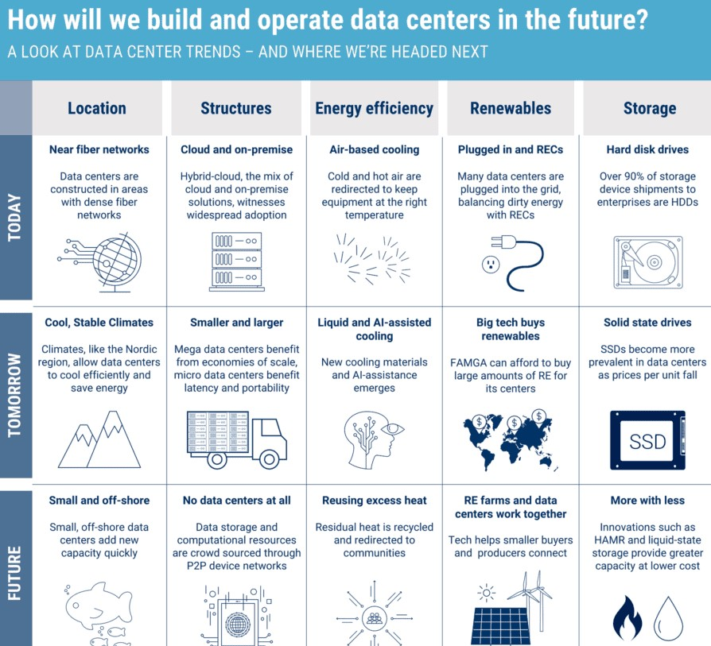

Ce site est dédié a:
Un site éducatif dédié à toute personne cherchant à travailler ou à étudier dans le domaine des centres de donnés. Il explique brièvement les plus importants points dans les centres de données parmi lesquelles :
1/ leurs infrastructures
2/ Avantages et inconvénients dans les Datacenters
3/ Les Technicien et leurs rôles dans les Datacenters
 vers le haut